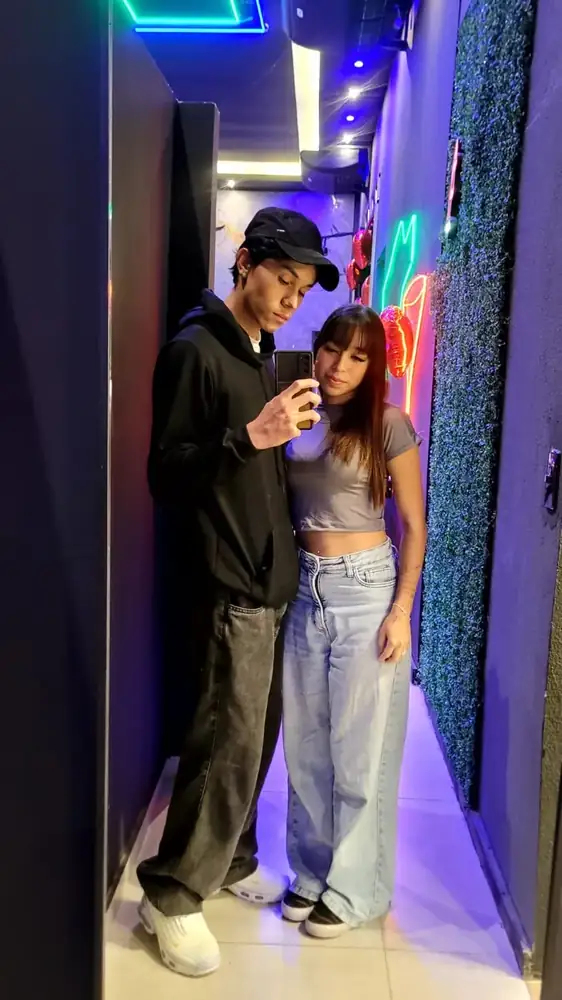
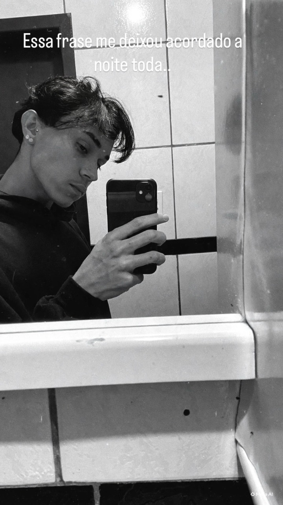
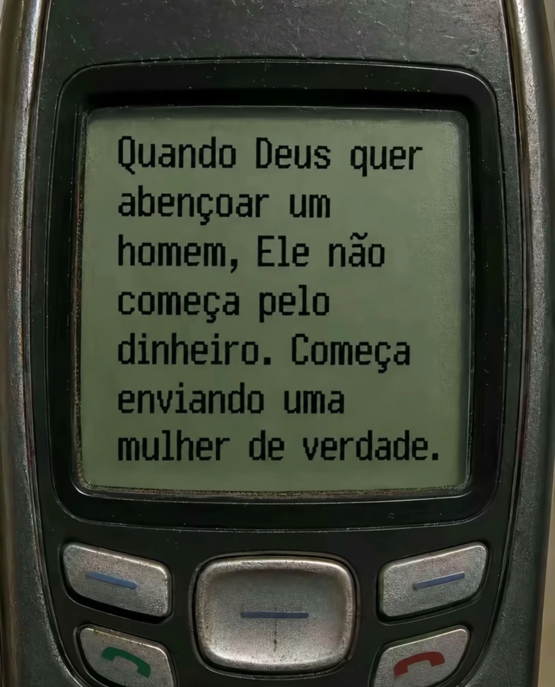
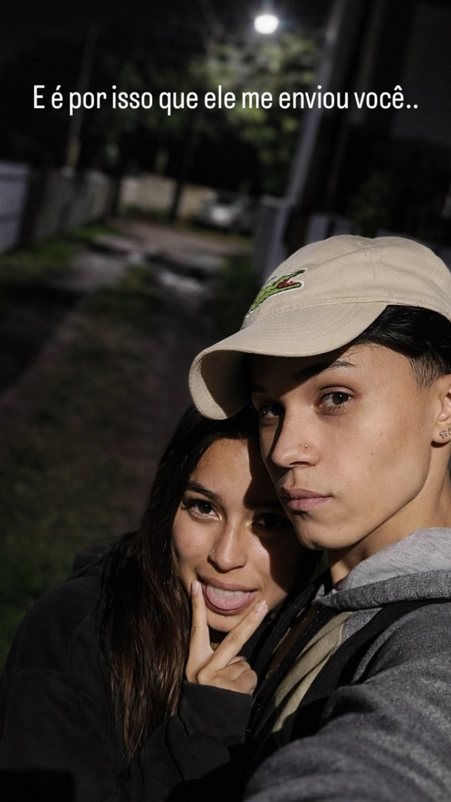

Que você viva coisas que te deixem orgulhosa.
Quero ver você conquistando o que deseja, descobrindo novos sonhos e olhando para trás com orgulho de tudo o que construiu.
Eu não queria te entregar só um presente. Queria te entregar um lugar onde cada detalhe lembrasse uma coisa simples: você se tornou uma das partes mais bonitas da minha vida.

O seu aniversário não é especial só porque existe uma história nossa. É especial porque celebra a pessoa que eu amo. E, antes de agradecer por ter você comigo, eu quero comemorar você por ser exatamente quem é.
Quero ver você conquistando o que deseja, descobrindo novos sonhos e olhando para trás com orgulho de tudo o que construiu.
Intensa, teimosa, carinhosa, cheia de personalidade e com esse jeito que consegue transformar momentos comuns em lembranças enormes.
E quando faltar, eu espero poder estar por perto para tentar arrancar de você pelo menos um daqueles sorrisos bobos que eu tanto gosto.
Feliz aniversário, minha benção. Eu celebro a sua vida, a pessoa que você é e tudo de bonito que ainda existe pela frente.
Algumas histórias se contam em páginas. A nossa também se conta em tempo. Cada dia ganhou um pedaço de você, e eu gosto de pensar que esse número ainda tem muito para crescer.
Não cabe tudo numa página, mas cabe o que mais importa: eu sou muito feliz por dividir a vida, os dias comuns e os momentos inesquecíveis com você.
Hoje é o seu dia, mas, de alguma forma, também é um dia que me faz pensar em tudo o que você representa para mim. Em tudo o que mudou desde que você entrou na minha vida e em como certas datas conseguem guardar sentimentos que palavras quase não conseguem explicar.
Naquele dia, talvez eu ainda não entendesse a dimensão do que estava acontecendo. Eu só sabia que queria estar mais perto de você.
Sem perceber, eu estava me aproximando do amor da minha vida. Cada conversa, cada sorriso e cada momento pareciam simples demais para carregar tanto significado, mas hoje eu olho para trás e entendo que eu já estava caminhando até você.
Foi quando eu percebi que queria continuar chegando cada vez mais perto de você.
Para mim, foi quando algo nasceu de verdade dentro do meu peito. Foi a nascença de um amor imenso por você. Um sentimento que chegou de um jeito tão forte que, desde então, nunca mais deixou de crescer.
Foi ali que meu coração começou a guardar você de uma forma diferente. Mais profunda, mais intensa, mais bonita. Como se naquele dia tivesse nascido em mim uma parte que só existe porque você existe.
Foi quando esse sentimento deixou de ser só começo e virou algo imenso dentro de mim.
Vivemos momentos lindos, dias difíceis, risadas, saudades, abraços, inseguranças, brincadeiras e momentos que provavelmente ninguém além de nós entenderia da mesma forma.
E mesmo depois de tudo isso, quando penso na nossa história, eu sempre volto para o começo e para tudo o que veio crescendo depois.
Primeiro eu fui chegando perto de você.
Depois, sem perceber, você já tinha virado parte de mim.
Se eu pudesse voltar naquele começo e falar alguma coisa para mim mesmo, eu diria para prestar atenção em cada detalhe. Para guardar cada conversa, cada olhar e cada segundo. Porque eu ainda não sabia, mas estava conhecendo alguém que mudaria completamente a forma como eu enxergaria o amor.
Você não se tornou apenas uma lembrança bonita na minha vida. Você se tornou parte dela.
Parte dos meus pensamentos, dos meus planos, das minhas melhores lembranças e de tantas coisas que ainda sonho viver.
Que esse novo ano da sua vida seja leve, bonito e cheio de coisas boas. Que você consiga realizar seus sonhos, que sorria muito, que se sinta amada e que nunca esqueça o quanto é especial.
Eu espero poder estar ao seu lado em muitos outros aniversários. Quero continuar vendo você crescer, mudando, conquistando coisas, criando novos sonhos e vivendo tudo aquilo que merece viver.
Quero estar nos dias importantes e também nos dias completamente comuns. Quero estar nas comemorações, nas conversas aleatórias, nos momentos de preguiça, nas risadas sem sentido e em todas aquelas pequenas coisas que, no fim, acabam sendo as que mais importam.
Se existe algo que eu quero que você nunca esqueça, é que o amor que nasceu em mim no nosso começo não ficou parado naquele momento.
Ele cresceu comigo, cresceu com a gente e continua florescendo cada vez que eu olho para você e encontro novos motivos para te escolher.
Guarde um pedacinho desta carta com você. Cada toque abre mais um.
palavras da nossa carta, para levar no coraçãoVocê não se tornou apenas uma lembrança bonita na minha vida. Você se tornou parte dela.
Tem datas que passam. E tem datas que mudam tudo. Essas são algumas das que ficaram marcadas em mim porque contam, em poucas linhas, como você foi virando parte da minha vida.
Naquele dia eu ainda não sabia o tamanho do que vinha pela frente. Só sei que estava me aproximando do amor da minha vida.
Eu ainda não sabia, mas já tava querendo ficar.
Foi quando nasceu dentro de mim esse amor imenso por você. O começo de um sentimento que só encontrou mais espaço para crescer.
Só de pensar em você, eu já sorria. Olha o tamanho que esse amor tomou.
Alianças, flores, carinho e a certeza de que um ano inteiro já tinha virado uma coleção enorme de memórias.
Passou rápido, né? E ainda assim cabe tanta coisa nossa aqui. Obrigado por viver isso comigo.
Mais um capítulo para guardar. A comemoração é sua, mas eu também comemoro a sorte de ter você na minha história.
Hoje eu queria conseguir te dar um abraço que dissesse tudo. Até a parte que eu nunca sei explicar direito.
Mais aniversários, lugares, conversas, fotos, sorrisos bobos e dias comuns que ainda vão virar lembranças enormes.
Quero continuar tendo você pra contar as coisas. As grandes e as que só fazem sentido pra gente.
Tem música que vira memória. Esta aqui combina demais com tudo o que eu quis colocar nessa surpresa.
Baco Exu do Blues
Uma trilha para acompanhar a leitura.
Eu queria que uma parte do seu presente fosse liberdade para escolher exatamente o que você quiser. Sem precisar me perguntar se pode, sem culpa e sem regra.
E isso ainda não é tudo. Tem presente que eu preferi não colocar numa tela.
Pequenos instantes que ficaram enormes em mim. Abra uma foto, passe para a próxima e deixe as lembranças acontecerem de novo.
Gosto da gente assim, sem juízo nenhum. Com você eu até esqueço de tentar parecer sério.
Às vezes eu olho pra gente e penso: ainda bem que era você.
Dá vontade de avisar esses dois aí: vocês ainda vão se amar tanto.
Sua risada acaba comigo. Eu tento acompanhar, mas às vezes só fico te olhando e pensando na sorte que eu dei.
A gente pode sair pra qualquer lugar. Eu vou acabar prestando mais atenção em você mesmo.
Fica mais um pouco. Nem precisa falar nada, só fica aqui comigo.
Nunca parece caber tudo. Sempre fica mais um carinho que eu queria te dar.
Um ano, amor. Parece que foi ontem e, ao mesmo tempo, eu já nem sei pensar na minha vida sem você.
Se eu pudesse esticar alguma coisa, era o tempo que passo com você. Sempre falta mais um pouquinho.
Não é uma lista completa. Nem teria como ser. São só algumas das coisas que aparecem quando penso no motivo de você ter se tornado tão importante para mim.
Porque foi conversando que a gente construiu algo que eu nem sabia que precisava tanto.
O tipo de sorriso que transforma um momento simples em uma lembrança que eu quero guardar.
Você sente de verdade. E foi no meio dessa intensidade que tanta coisa ganhou significado para mim.
O jeito que você cresce, aprende, muda e ainda continua sendo exatamente a menina por quem eu me apaixonei.
Até os dias comuns parecem carregar alguma coisa especial quando eu posso dividir eles com você.
Inclusive quando você é teimosa. Talvez principalmente quando você é teimosa.
Passeios, fotos, abraços, vergonha, risadas. Coisas pequenas que ficaram enormes dentro de mim.
Não é exatamente um lugar. É aquela sensação de estar perto de você e pensar que é ali que eu queria estar.
Mesmo quando eu não estiver aí, queria te deixar um pouquinho do meu carinho.
Se eu pudesse, já tinha aparecido aí só pra te abraçar. Tô com vontade de ficar bem pertinho de você.
Sinto falta das nossas conversas, das bobagens, de ficar perto sem precisar de assunto. Quando a gente se encontrar, vem pro meu abraço. Eu quero ficar lá mais um pouco.
um beijo meu. ♥Amor, queria poder aliviar um pouco o que tá pesando aí. Se quiser falar, eu quero te ouvir. Se não quiser, a gente pode só ficar junto.
Você não precisa arrumar um jeito bonito de me contar nem fingir que já passou. Eu quero estar com você também quando o dia dá tudo errado.
um beijo meu. ♥Se hoje você tá duvidando de si, vem cá. Eu continuo vendo a menina por quem me apaixonei, até quando você tá cansada, com medo ou sem saber o que fazer.
E, se o medo for sobre nós, pode falar comigo. Quero te ouvir de verdade e cuidar da gente com você.
um beijo meu. ♥Se o sono não veio, eu queria estar aí só pra ficar perto. A gente nem precisava conversar. Bastava você saber que eu tava ali.
Se tiver alguma coisa te preocupando, a gente pensa nisso com mais calma amanhã. Agora eu só queria te desejar uma noite boa e te dar um beijo antes de dormir. Imagina ele aí. É seu.
um beijo meu. ♥Eu quero mais tempo com você. Desses que a gente nem vê passar.
Vale um abraço meu, sem ficar olhando a hora. Você chega, encaixa aqui e fica mais um pouquinho.
A gente escolhe um cantinho e vai. Pode ser perto mesmo. Eu só quero um tempo pra conversar e andar com você.
Escolhe o filme e vem ficar comigo. Pode comentar as cenas, rir, reclamar do final... eu vou gostar de ter você ali.
Conversar, ouvir uma música ou só ficar quietinho. A gente escolhe um dia e descobre junto o que tá com vontade de fazer.
Tem umas coisas nossas que eu guardo com carinho. Quero ver quais ficaram com você também.
8 de maio. Eu só sabia que queria estar mais perto de você.
15 de outubro. Eu amo poder comemorar a sua vida.
Te Amo Disgraça, do Baco Exu do Blues.
12 de maio. Foi quando esse amor nasceu dentro de mim.
Na Torre Eiffel. Eu ainda vou te perguntar se você topa continuar comigo pra vida inteira.
Não sei o dia de tudo. Mas sei com quem eu quero viver essas coisas.
e eu já imagino você ali. ♥Eu ainda vou te pedir em casamento na Torre Eiffel. Pode guardar isso. Quero olhar pra você ali, todo nervoso, e perguntar se você topa continuar comigo pra vida inteira.
Marca os que você também quer viver comigo.
Por tudo que já vivemos, pelo que estamos construindo agora e por todos os capítulos que ainda vamos escrever juntos.
Feliz aniversário, minha menina teimosa favorita. Se um dia você voltar aqui só para lembrar, eu quero que sinta outra vez o quanto você é amada. Ainda quero viver muita coisa com você, muitos dias grandes e, principalmente, muitos dias comuns. ♥
Eu queria que você recebesse alguma coisa bonita, doce e de verdade nas mãos. Os lírios são a minha tentativa de colocar beleza no seu dia. Os chocolates são só porque aniversário sem coisa gostosa seria sacanagem.


